22 апреля 2012 г. в музее «Шалаш В.И. Ленина» в Разливе состоялась очередная конференция «В.И. Ленин в современном мире». Организаторы — Государственный историко-культурный комплекс в Разливе, российская газета «Народная Правда» и ОАО «Третий парк».
С приветственными словами к участникам конференции обратились представитель администрации Курортного района Санкт-Петербурга Кирилл Алексеевич Рейнхольдс и депутат муниципального образования Сестрорецка Михаил Михайлович Деревянко.
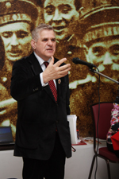С первым докладом выступил Алексей Васильевич Воронцов, доктор философских наук, профессор, Заслуженный работник высшей школы, заведующий кафедрой истории и теории социологии РГПУ им. А.И. Герцена, депутат Законодательного Собрания Санкт-Петербурга. Он отметил, что Ленин разработал по сути все основные теоретические проблемы строительства нового общества: и план кооперации, и план индустриализации, и план культурной революции. И сейчас мы должны разрабатывать такую стратегию, чтобы вывести нашу страну из затянувшегося кризиса и в перспективе вновь направить на путь социализма. Коллективизация нам была крайне необходима. Если бы мы не провели кооперацию, мы бы не победили в годы Великой Отечественной войны. И сейчас если государство не заботится о продовольственной безопасности, то это преступление по отношению к гражданам. А как можно решить этот вопрос? Только в рамках крупных сельскохозяйственных предприятий и при поддержке государства. Если раньше в Советском Союзе было сельскохозяйственное машиностроение, которое обеспечивало нужды сельского хозяйства, то сейчас о нем и не слышно, а наши лидеры все пекутся об автопроме и то иностранном.
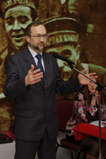Доклад по теме «В.И. Ленин об использовании в социалистической экономике товарно-денежных отношений» сделал Виктор Иванович Галко, кандидат экономических наук, ректор Университета рабочих корреспондентов Фонда Рабочей Академии. Он показал, что сегодня все экономически развитые государства пользуются на практике выводами, которые сделал В.И.Ленин. А каким был лозунг, который до сих пор поддерживается в нашем государстве? Рынок, дескать, решит все. Но когда капитализм переходит в монополистический стадию, происходит подрыв рыночных отношений и на их место приходит система заказов или, говоря современным языком, система государственного монополистического регулирования экономики. И если мы ставим задачу вывести Россию на передовые позиции и не доросли до того, чтобы пользоваться социалистическими методами, то давайте пользоваться хотя бы передовыми буржуазными методами.
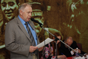С докладом «Ленин о значении крупного машинного производства» Выступил Борис Николаевич Гавшин, кандидат экономических наук, полковник милиции, заместитель главного редактора Российской общественно-политической газеты «Народная правда». Чтобы стать высокоразвитой индустриальной страной и занять передовые позиции в мировой экономике России необходимо наличие крупного машинного производства. На этом настаивал В.И. Ленин, и правота его слов была подтверждена в дальнейшем построением в нашей стране социализма, основанного на индустриализации. С развитием крупного машинного производства происходило становление новой формы политического устройства — Советов рабочих, крестьянских и солдатских депутатов, которые формировались по производственному признаку и являлись по своему содержанию самой передовой формой демократического управления государством. В настоящее время, когда наша страна стала вновь капиталистической, задача вывода нашей страны на передовые позиции в мировой экономике ложится в первую очередь на плечи государства. То есть государство должно выполнять свои функции как контролирующего, планирующего, программирующего и надзорного органа.
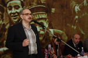Доклад «В.И. Ленин о борьбе с оппортунизмом» сделал Иван Михайлович Герасимов, кандидат технических наук, доцент Санкт-Петербургского государственного Политехнического университета. В.И. Ленин раскрыл суть понятия оппортунизм, который состоит в принесении коренных интересов движения в жертву побочным и сиюминутным. Оппортунизм сыграл предательскую роль в произошедшей у нас контрреволюции и возврате обратно к капиталистическому способу производства. Оппортунисты — это люди, которые не выходят за свой предел, за предел своих сиюминутных возможностей. Но можно ли с таким подходом достичь прогресса в чем-либо? Безусловно, нет. Вот и у нас в стране сейчас происходит борьба между теми, кто считает, что рынок решит все, и теми, кто считает, что в условиях монополистического капитализма, только государство может обеспечить высокий всеобщий уровень образования как необходимое условие внедрения в экономику достижений научно технического прогресса.
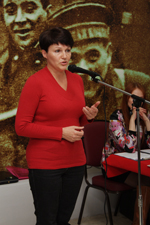О развитии деятельности Дома-музея В.И. Ленина в Выборге рассказала директор муниципального автономного учреждения культуры «Историко-культурный центр г. Выборга» Надежда Ивановна Забавская. Сегодня в Выборге с его вековой историей несмотря на влияние антиленинской, антисталинской, антикоммунистической пропаганды сохраняется и развивается Дом-музей Ленина и он выполняет не только миссию сохранения исторического наследия, но и ведет огромную просветительскую работу, объединяя людей разных взглядов и левых, и правых, и любителей-краеведов, и простых граждан, и это объединение людей происходит на том, что несмотря на то воздействие, какое оказывает сегодня на их сознание современная идеология, ростки социал-демократии все равно прорастают, идеи справедливого социального устройства общества неубиваемы.
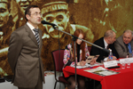С докладом «В.И. Ленин о сокращении рабочего времени для участия трудящихся в управлении государством» выступил Александр Владимирович Золотов, доктор экономических наук, профессор, заведующий кафедрой экономической теории Нижегородского государственного университета имени Лобачевского, действительный член Петровской академии наук и искусств. Увеличение свободного времени — это условие прогрессивного развития любого общества. Появление свободного времени у рабочих в дореволюционной России после того, как они в результате стачечной борьбы вводили на предприятиях восьмичасовой рабочий день, привело к формированию Советов, которые в дальнейшем и стали опорой новой власти. Введение с 1928 года в социалистической промышленности 7-часового рабочего дня было объективным условием для развития нового государства, государства диктатуры пролетариата, расцвета которого не могло быть как без роста производительности труда, так и без активного участия рабочих в его управлении. Ленин глубоко понимал, какую угрозу несет в себе бюрократия новому государству. Побороть ее можно было лишь при активном участии рабочих в управлении, а это возможно лишь при наличии свободного времени, которое как раз и должно тратиться на то, чтобы овладеть навыками и знаниями по управлению.
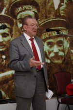Ленинскому пониманию современной эпохи посвятил свой доклад Александр Сергеевич Казеннов, доктор философских наук, профессор Ленинградского государственного университета им. А.С. Пушкина. Под современностью понимают иной раз то, что хочется понимать. Сегодня говорят, что мы живем в эпоху модерна, то есть если по смыслу этого слова, то в эпоху современности. Или говорят, что мы живем в эпоху постмодерна, то есть с современностью покончено и общество сделало скачок назад в феодализм. Или говорят, что у нас эпоха постпостмодерна — это, наверно, кто-то думает, что мы скатились уже к рабовладению. Спасает сегодня общественную науку только то, что более чем сто лет назад Лениным было сформулировано, что такое историческая эпоха. Историческая эпоха — это такой период времени, когда главные общественные процессы определяет передовой класс, действующий в этом периоде. Современная эпоха — это есть эпоха пролетарских революций и диктатуры пролетариата. Понятие революции означает социальный переворот, гигантский скачок по пути прогресса. Трудно назвать революционерами Касьянова, Рыжкова, Немцова, которые организовывали марши несогласных и которые в период своего руководства чуть не привели страну к развалу. Под понятие революции не подпадает и то, что происходит или произошло в странах Африки и Ближнего Востока.
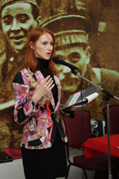Теме «Социально-культурная роль музеев В.И. Ленина и перспективы ее развития» посвятила свой доклад Наталья Степановна Коваленко, директор Санкт-Петербургского государственного бюджетного учреждения культуры «Историко-культурный музейный комплекс в Разливе». Как показывает время, социально-культурная роль музеев В.И. Ленина с каждым годом возрастает. Главная задача любого исторического музея — это сохранение истории культурного, материального и духовного наследия. А для кого сохраняем? Кто и как будет пользоваться этим опытом? И здесь перед работниками музеев встает задача воспитания у подрастающего поколения уважительного отношения к этому богатству и умения этим богатством пользоваться. И сегодня работники музеев успешно решают эту задачу, придумывают новые формы. Взять хотя бы исторические реконструкции, которые проводятся в Выборгском музее Ленина, или деятельность театральной студии, кружка юных экскурсоводов при «Историко-культурном музейном комплексе в Разливе». Культурное и историческое наследие, которое оставил такой гигант, как В.И. Ленин, востребовано сегодня у граждан нашего общества.
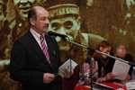С докладом «Проблемы Латвии на современно этапе. Ленин и организация общества» выступил Валерий Юрьевич Круглов, секретарь партийной организации «Центральная» социалистической партии Латвии. Человечество давно пытается найти справедливую форму организации общества. Такую форму организации общества обосновали в своих трудах Маркс, Энгельс и Ленин. Причем их идеи были реализованы на практике путем построения в России социализма. И сегодня, когда в республиках Советского Союза произошли контрреволюции, состоялся возврат к капитализму, у граждан появляется возможность сравнить, какие формы организации общества наиболее справедливы. Те проблемы которые, испытывает сегодня Латвия, тот путь который она прошла с начала «перестройки» — это развал сельского хозяйства и промышленности и как итог — долговая зависимость от Запада.
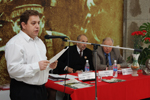«Современное значение борьбы Ленина с корниловским мятежом» — тема доклада Игоря Петровича Миника, бригадира строителей Строительной бригады ООО «Энергострой». Если взглянуть на корниловский мятеж, то по сути это была попытка контрреволюционного переворота, имевшего своей задачей свержение буржуазного правительства, которое было сформировано после февральской революции 1917 года. Что нес с собой корниловский переворот? Реставрацию старых феодальных порядков. А что несло Временное правительство? Установление более прогрессивного буржуазного общества. И какую в этой ситуации надо поддерживать тенденцию — прогрессивную или реакционную? Ответ понятен и ясен — конечно, прогрессивную. Что и было проделано большевиками в непростой ситуации, буржуазное правительство при поддержке партии большевиков одержало победу и подавило корниловский мятеж. А что происходит в современной России? Появилось движение «несогласных», которое возглавили всем известные «демократы» Касьянов, Рыжков, Немцов. Что скрывается за их словами о том, что в России прошли нечестные выборы? Думаю, что всем понятно — желание вернуться во власть. А для чего? Ну, понятно — продолжить ими начатое разграбление России. А возможно это сделать? Возможно. Все мы знаем, по чьему сценарию и как разворачивались события в Югославии, Ливии, Ираке и в других странах. Все начиналось с того, что в эти страны приходили «заступники» демократии. И что эти защитники демократии принесли с собой прогресс? Да, прогресс был, но только для этих защитников: у них появились новые сырьевые ресурсы, новые пути наркотрафика и подчиненные им демократические правительства. Хочется сказать: «Уважаемые лидеры левого движения, если вы не вспомните о том, как Ленин боролся с корниловским мятежом, то у вас будет мало будет шансов одержать в будущем политические победы и привести наше государство к действительному прогрессу.
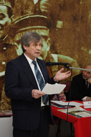Доклад «Ленин и Куусинен о коммунистической партии» сделал Аймо Минккинен, доктор философии, директор Музея Ленина в Тампере, Финляндия.
Еще в 1905 году Ленин дал высокую оценку организованности финского рабочего класса. Обращаясь к своим товарищам после конференции, которую организовали рабочие в Тампере, он сказал: «Интересно, а когда мы достигнем в России такого уровня организации и порядка, такого высокого уровня культуры проведения конференций и организации рабочих?». Сегодня можно немного перефразировать слова Ленина и сказать — Интересно, а когда мы в России достигнем того уровня жизни и социальной защищенности, который имеют сегодня простые жители Финляндии? Вызывает большое уважение интерес граждан Финляндии к своей истории, к сохранению культурно- исторического богатства, связанного с работой и жизнью В.И. Ленина в Финляндии. Может быть, в этом и кроются успехи Финляндии на пути построения справедливого общества. Но эти успехи невозможны были без вклада, который внес рабочий класс Финляндии и коммунистическая партия, возглавляемая Куусиненом в коммунистическое движение в целом.
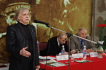«Историко-культурное и политическое значение Мавзолея В.И. Ленина» — тема доклада Олега Петровича Мироненко, историка, писателя, политолога, действительного члена Русского географического общества и «Союза ученых» Санкт-Петербурга. Факты, доводы и аргументы, которые привел в своем докладе Олег Петрович, не оставляют шансов противникам Ленина в их попытках убедить население России в необходимости уничтожения Мавзолея. Действительно, Мавзолей имеет не только огромное культурно-историческое значение для нашей страны, для ее преемственности, но он еще является символом или, можно сказать, связующим звеном, которое удерживает наше государство от развала. Можно представить, что может произойти с разрушением Мавзолея — ну, например, могут найтись такие атеисты, которые решат, что можно пойти в храмы и уничтожить мощи святых, которым поклоняются верующие. Или можно пойти в Александрию и разрушить там мавзолей Александра Македонского, так как это противоречит христианским традициям. Или разрушить Пирамиды в Египте — это ведь по сути тоже мавзолей — или заставить директора Эрмитажа похоронить мумию, которая находится там, согласно христианским традициям. Много чего еще можно придумать. По сути своей Мавзолей — это памятник человеческому гению, который беззаветно служил своему народу.
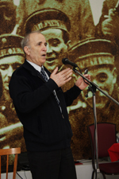С докладом «В.И. Ленин об основном законе государства: сравнительный анализ буржуазной и социалистической конституций» выступил Джамал Зейнутдинович Мутагиров, доктор философских наук, профессор факультета политологии Санкт-Петербургского государственного университета, Заслуженный деятель науки Российской Федерации. Когда господствующим классом являются эксплуататоры и целью этого государства является защита частной собственности, в конституции делается акцент на защите частной собственности. Когда же общество преследует целью уничтожение эксплуататорских отношений, утверждение отношений справедливости, равенства и подлинного братства, акцент делается на труде человека, на его личные способности, на его свободе. Россия сейчас живет без легитимной Конституции. Кто ее автор? Автор неизвестен. Вот социалистическая Конституция, как говорил Ленин, гарантирует то, что завоевано. Поскольку завоевания преумножаются с каждым годом, с каждым десятилетием эта Конституция пересматривается, обновляется. Мы знаем, что за 60 лет Советской властью были приняты четыре Конституции. Эти Конституции разрабатывались представителями народа, комиссией Верховного Совета из числа депутатов. Выносились на всенародные обсуждения. Мы высказывали свои суждения. Ленин повторял слова Маркса и Энгельса, что коммунисты были бы последними, кто отказался бы мирным путем прийти к власти, установить социализм, но если эксплуататоры встретят нас силой, мы должны обладать силой, чтобы отвечать на силу. ПоэтоЂСѓРєС†РёРё, которые проводятся РІ Выборгском музее Ленина, или деятельность театральной студии, кружка юных СЌРєСЃРєСѓСЂСЃРѕРІРѕРґРѕРІ РїСЂРё В«Р